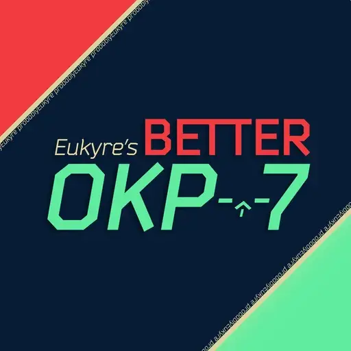
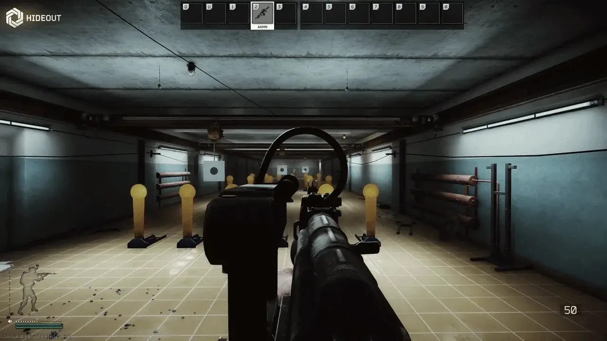

Mod
Better OKP-7
- Downloads
- 2,385
- Favourites
- 20
- Mod lists
- 38
This mod displayed a profile-binding notice on Forge.
The author marked this item as containing advertising.
Overview
Eukyre’s Better OKP-7 is a mod designed around SamSWAT’s old name of the same monacre. Designed with the purpose of making the EBK OKP-7 optics (both Dovetail and Picatinny) have a selection of reticles to choose from for the user’s convenience.
Installation
- Download Eukyre-BetterOKP7-1.0.0.7z
- Open the downloaded .7z file in 7-zip.
- Drag the contents of the .7z file into your base SPT directory.

Showcase
Better OKP-7 adds a selection of 3 reticles to the optics, those being the following:
- Simple Dot - Classic, easy to use and good for target acquisition.
- Dot with a Ring - Similar to what BSG had before, but without the extra ring that doesn’t actually exist on these optics.
- The Cross - The Iconic OKP-7 reticle that everyone loves, and is preferred overall by Tarkov Players.
You can see these optics in use with the GIF below:

Version
1.0.1
SPT ~4.0.13
Fika: compatible
1,949 downloads4.0 MB
Fixed the fact I uploaded the wrong files, sorry guys.
Dependencies
VirusTotal: report 1
Version
1.0.0
SPT ~4.0.10
Fika: unknown
436 downloadsUnknown size
The release!
Dependencies
VirusTotal: report 1
nuked from forge, try source code url